広告
・運動量収支式の離散化
x, y軸方向の無次元化した運動量収支式は次式となります。
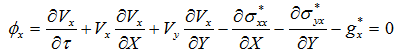
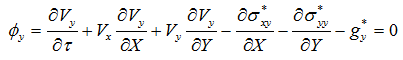
内挿関数Niを重み関数に使用すると離散化式は次式となります。
\[
\int_S
\begin{bmatrix}N_1\\N_2\\N_3\end{bmatrix}\phi_i\,dS
=\int_S
\begin{bmatrix}0\\0\\0\end{bmatrix}dS
=\begin{bmatrix}0\\0\\0\end{bmatrix}.
\]
速度、圧力は、内挿関数Niを用いてそれぞれ次式で表されます。
\[
\begin{aligned}
V_x &= N_1V_{x,1}+N_2V_{x,2}+N_3V_{x,3}=[N]\{V_x\},\\
V_y &= N_1V_{y,1}+N_2V_{y,2}+N_3V_{y,3}=[N]\{V_y\},\\
P &= N_1P_1+N_2P_2+N_3P_3=[N]\{P\}.
\end{aligned}
\]
i軸方向の離散化式は、次式となります。
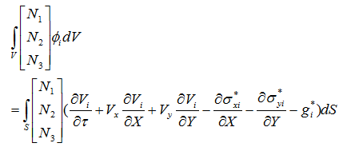
展開すると
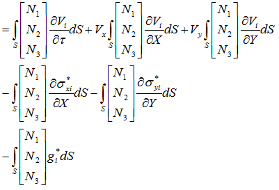
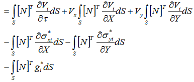
グリーン・ガウスの定理より
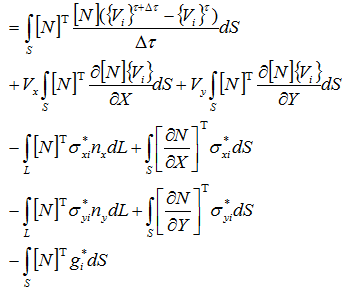
界面に作用する応力をまとめると
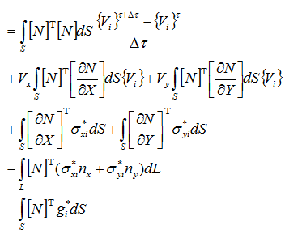
応力を展開して
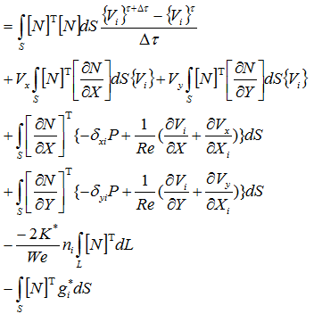
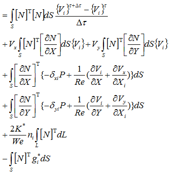
項ごとに分解して
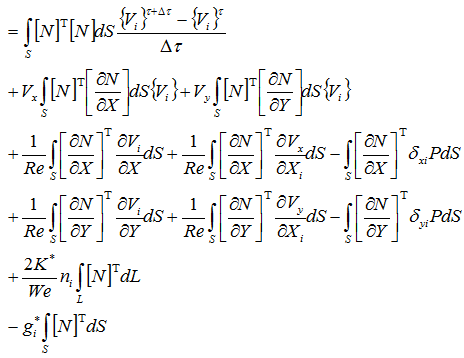
速度、圧力を内挿関数で表示して
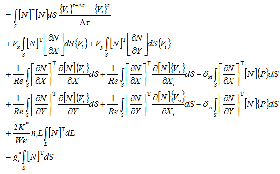
形状関数内挿後の節点自由度は積分変数に依存しないため、積分の外に出します。
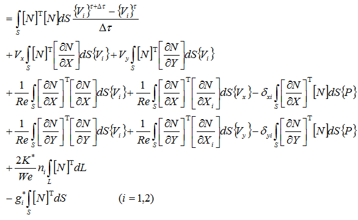
行列式で表す
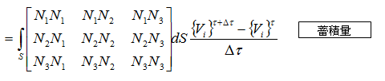
対流項
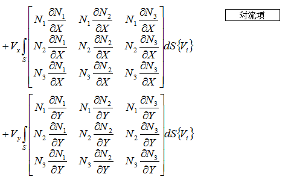
x軸方向の粘性項と圧力項
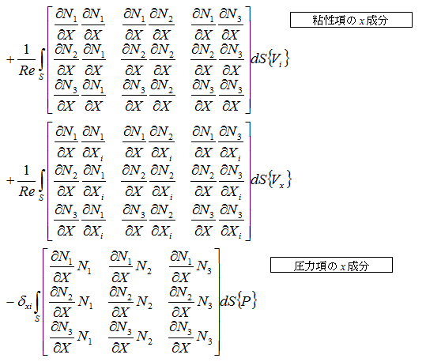
y軸方向の粘性項と圧力項
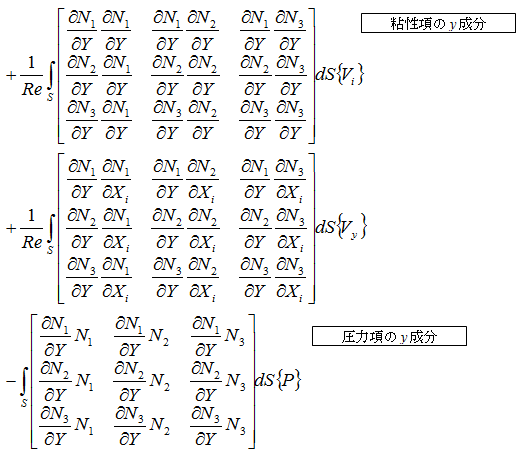
表面張力項
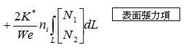
重力項
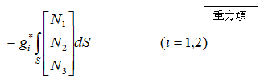
内挿関数を形状関数に直す
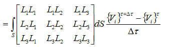
対流項
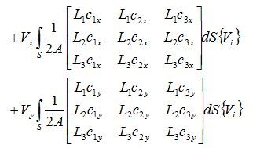
x軸方向の粘性項と圧力項
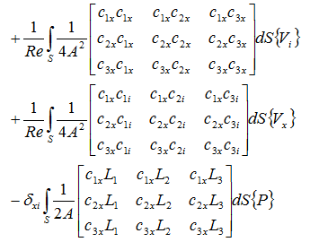
y軸方向の粘性項と圧力項
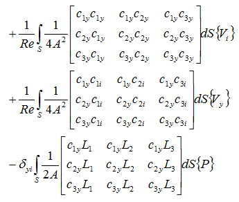
表面張力項
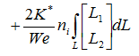
重力項
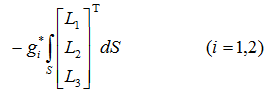
ここで、面積積分、体積積分の公式より
\[
\int_S L_1^pL_2^qL_3^r\,dS
=\frac{p!q!r!}{(p+q+r+2)!}\,2A,
\]
\[
\int_S L_iL_j\,dS=
\begin{cases}
\dfrac{A}{12}, & i\ne j,\\[4pt]
\dfrac{A}{6}, & i=j,
\end{cases}
\qquad
\int_S L_i\,dS=\frac{A}{3},
\]
\[
\int_L L_1^pL_2^q\,dL
=\frac{p!q!}{(p+q+1)!}\,L,
\qquad
\int_L L_i\,dL=\frac{L}{2}.
\]
形状関数を積分すると
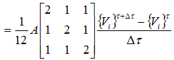
対流項
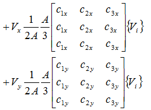
x軸方向の粘性項と圧力項
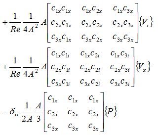
y軸方向の粘性項と圧力項
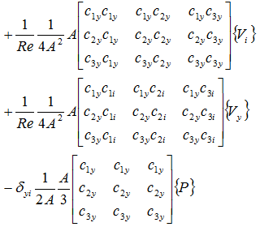
表面張力項
\[
+\frac{K^*}{We}\,n_iL
\begin{bmatrix}1\\1\end{bmatrix}
\]
境界辺上の2節点ベクトルは、要素方程式へ加算するときに境界辺の節点番号から三角形要素の3節点へ写像します。以降では
\(\mathbf b_L=A_L^T[1\;1]^T\)
と表し、例えば境界辺が要素節点1-2なら \(\mathbf b_L=[1\;1\;0]^T\) となります。
重力項
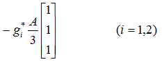
係数をまとめて
対流項
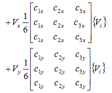
x軸方向の粘性項と圧力項
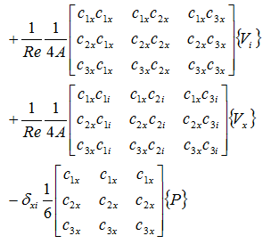
y軸方向の粘性項と圧力項
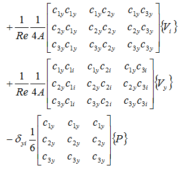
表面張力項
\[
+\frac{K^*}{We}\,n_iL
\begin{bmatrix}1\\1\end{bmatrix}
\]
重力項
行列式をまとめると
\[
\begin{aligned}
0={}&[C]\frac{\{V_i\}^{\tau+\Delta\tau}-\{V_i\}^{\tau}}{\Delta\tau}
+V_x[C_x]\{V_i\}+V_y[C_y]\{V_i\}\\
&+\frac1{Re}[S_{xx}]\{V_i\}+\frac1{Re}[S_{xi}]\{V_x\}-\delta_{xi}[H_x]\{P\}\\
&+\frac1{Re}[S_{yy}]\{V_i\}+\frac1{Re}[S_{yi}]\{V_y\}-\delta_{yi}[H_y]\{P\}\\
&+\frac{K^*}{We}Ln_i\,\mathbf b_L
-g_i^*\frac{A}{3}\begin{bmatrix}1\\1\\1\end{bmatrix},\qquad i=1,2.
\end{aligned}
\]
行列ごとにまとめると
\[
\begin{aligned}
0={}&[C]\frac{\{V_i\}^{\tau+\Delta\tau}-\{V_i\}^{\tau}}{\Delta\tau}
+(V_x[C_x]+V_y[C_y])\{V_i\}\\
&+\frac1{Re}([S_{xx}]+[S_{yy}])\{V_i\}
+\frac1{Re}([S_{xi}]\{V_x\}+[S_{yi}]\{V_y\})\\
&-(\delta_{xi}[H_x]+\delta_{yi}[H_y])\{P\}
+\frac{K^*}{We}Ln_i\,\mathbf b_L
-g_i^*\frac{A}{3}\begin{bmatrix}1\\1\\1\end{bmatrix},\qquad i=1,2.
\end{aligned}
\]
最終的に次式が導出されます。
\[
\begin{aligned}
[C]\frac{\{V_i\}^{\tau+\Delta\tau}-\{V_i\}^{\tau}}{\Delta\tau}
&+(V_x[C_x]+V_y[C_y])\{V_i\}
+\frac1{Re}([S_{xx}]+[S_{yy}])\{V_i\}\\
&+\frac1{Re}([S_{xi}]\{V_x\}+[S_{yi}]\{V_y\})
-(\delta_{xi}[H_x]+\delta_{yi}[H_y])\{P\}\\
&+\frac{K^*}{We}Ln_i\,\mathbf b_L
-g_i^*\frac{A}{3}\begin{bmatrix}1\\1\\1\end{bmatrix}
=\begin{bmatrix}0\\0\\0\end{bmatrix},\qquad i=1,2.
\end{aligned}
\]
既知の項を右辺に移項します。
\[
\begin{aligned}
\frac{[C]}{\Delta\tau}\{V_i\}^{\tau+\Delta\tau}
&+(V_x[C_x]+V_y[C_y])\{V_i\}^{\tau+\Delta\tau}
+\frac1{Re}([S_{xx}]+[S_{yy}])\{V_i\}^{\tau+\Delta\tau}\\
&+\frac1{Re}([S_{xi}]\{V_x\}^{\tau+\Delta\tau}+[S_{yi}]\{V_y\}^{\tau+\Delta\tau})
-(\delta_{xi}[H_x]+\delta_{yi}[H_y])\{P\}^{\tau+\Delta\tau}\\
&=\frac{[C]}{\Delta\tau}\{V_i\}^{\tau}
-\frac{K^*}{We}Ln_i\,\mathbf b_L
+g_i^*\frac{A}{3}\begin{bmatrix}1\\1\\1\end{bmatrix},\qquad i=1,2.
\end{aligned}
\]
x軸方向の成分は次式となります。
\[
\begin{aligned}
\frac{[C]}{\Delta\tau}\{V_x\}^{\tau+\Delta\tau}
&+(V_x[C_x]+V_y[C_y])\{V_x\}^{\tau+\Delta\tau}\\
&+\frac1{Re}\left((2[S_{xx}]+[S_{yy}])\{V_x\}^{\tau+\Delta\tau}
+[S_{yx}]\{V_y\}^{\tau+\Delta\tau}-[H_x]\{P\}^{\tau+\Delta\tau}\right)\\
&=\frac{[C]}{\Delta\tau}\{V_x\}^{\tau}
-\frac{K^*}{We}Ln_x\,\mathbf b_L
+g_x^*\frac{A}{3}\begin{bmatrix}1\\1\\1\end{bmatrix}.
\end{aligned}
\]
y軸方向の成分は次式となります。
\[
\begin{aligned}
\frac{[C]}{\Delta\tau}\{V_y\}^{\tau+\Delta\tau}
&+(V_x[C_x]+V_y[C_y])\{V_y\}^{\tau+\Delta\tau}\\
&+\frac1{Re}\left([S_{xy}]\{V_x\}^{\tau+\Delta\tau}
+([S_{xx}]+2[S_{yy}])\{V_y\}^{\tau+\Delta\tau}-[H_y]\{P\}^{\tau+\Delta\tau}\right)\\
&=\frac{[C]}{\Delta\tau}\{V_y\}^{\tau}
-\frac{K^*}{We}Ln_y\,\mathbf b_L
+g_y^*\frac{A}{3}\begin{bmatrix}1\\1\\1\end{bmatrix}.
\end{aligned}
\]